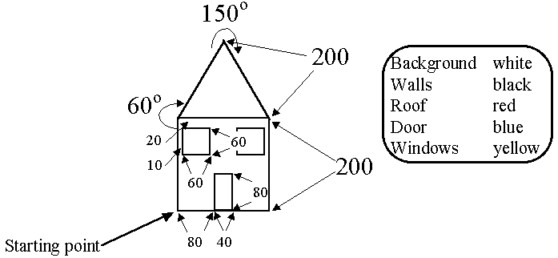
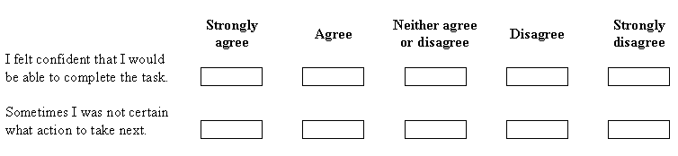

There are now four interfaces for the control of a tuttle and the question of which is the best interface might be raised, not only in the context of controlling a tuttle but also for any other application. However the question has no easy answer and will depend upon the nature of the application, the nature of the task which it is being used for and the nature of the user who is performing the task. All that can be attempted is that, given a specific application and task with a particular type of user, a comparison of different interfaces can be made and some of these results might be generalised.
Any user interface should be effective, efficient and enjoyable. Effective in the sense that it allows tasks to be performed, efficient in the sense that it allows the tasks to be performed without undue stress or effort and enjoyable in the sense that the users will report that they take pleasure, or at least feel neutral, about using the interface. This description of user interfaces provides the basis of the techniques which can be used to evaluate them. A representative set of users can be selected, or obtained, and required to perform some task. Their actions whilst they are performing the task can be observed, recorded or measured and their attitude towards the interface can be established after they have completed it.
To evaluate the four tuttle interfaces a specific task, or series of tasks, could be established and described to the user. In order to ensure that the task being presented to the user is one of controlling the tuttle and not a test of their trigonometric or artistic abilities the instructions should include the lengths of the lines and the angles of the turns. A possible task is shown in Figure 7.6.

Figure 7.6 Possible tuttle evaluation task.
To conduct the investigation correctly the experiences of each group of users, known as subjects, should be as identical as possible. This relies upon an investigation protocol being produced which states exactly what the person conducting the investigation should say regarding the purpose of the investigation, what is expected of the subjects and what the investigator can say if a subject asks for help. The protocol might then allow a period of time, say about 15 minutes, during which the user is allowed to freely explore the interface before the specific task is introduced.
The measurements which can be made upon the subject's behaviour while attempting the task include:
- the degree of completion of the task.
- the total time taken to complete the task.
- the number of commands used.
- the number of mistakes made.
- the number of times help is requested.
The attitude of the subject can be established by using a questionnaire after they have completed the task. A common form of questionnaire is made up from Leikert scales which have five possible responses, as shown in Figure 7.7. This can be converted to a numeric response by scoring a middle response as 0, negative responses as -1 and -2 and positive responses as +1 and +2. As indicated in the sample given, to prevent the subject from just ticking all the boxes down a column a mixture of positive and negative statements should be used.

Figure 7.7 Sample Leikert scale for evaluating the subject's attitude.
This approach can be used proactively as well as reactively. That is, a specification of the required usability of an interface can be produced while the functional specification of the software is being prepared. A very simple usability specification for a word processing system might be as follows.
The task is to open a new, empty document and type in a given paragraph which involves making some words bold and some italic. The paragraph should then be printed and the document stored in a file in the default directory.
A subject who has very little experience of using computers should be able to complete this task within 30 minutes making less than 10 errors and report an overall neutral attitude. A subject who uses a computer on a semi-regular basis, at least once a week, should be able to complete the task in 15 minutes making less than 5 errors and report an overall positive attitude. A subject who uses a computer on a daily basis should be able to complete the task in less than 5 minutes making no errors and report an overall positive attitude.
However, the major problem with this approach to usability engineering is the cost involved in performing the investigation. Improvements to the usability of an interface, or a proposed interface, can be more economically introduced by using a list of heuristics, particularly when the list is applied by an expert. One of the most widely used list of heuristics is that devised by Neilsen and details of references which contain it are included in Appendix A.